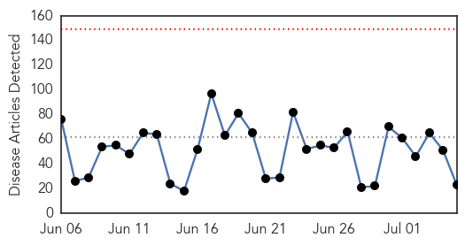
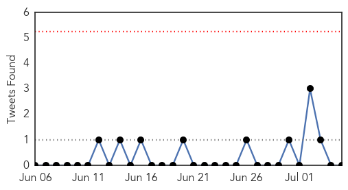
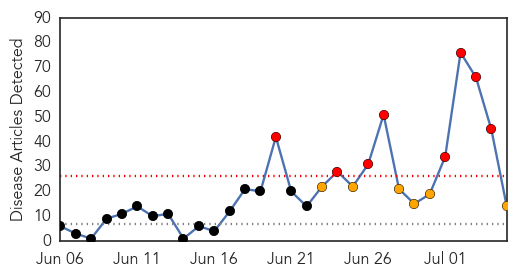

Unknown
30-Day Web Trend
0 alerts, 0 warnings

30-Day Twitter Trend
0 alerts, 0 warnings

Article Locations


Article Confidences

Top Articles:
- 0.937
- The Rocky Mount Telegram
- 0.931
- Security forces combat malaria in Tripura
- 0.917
- Chicago Tribune
- 0.917
- Chicago Tribune
- 0.917
- Chicago Tribune
- 0.917
- Chicago Tribune
- 0.901
- Not enough done to eradicate rabies, say experts
- 0.897
- Misery, and mysteries, persist
- 0.812
- Doctors being airlifted to malaria-hit areas in Tripura
- 0.802
- Burgers, fries, and anthrax; 5 hospitalized in Hungary from tainted beef
- 0.663
- IBM, others to help public health officials improve food safety
- 0.599
- No JE cases in Kampung Selamat, Bagan Jermal
- 0.585
- Endometriosis can cause infertility in women - Emirates 24
- 0.581
- Ukrainian forces retake rebel stronghold of Slaviansk
- 0.581
- Taliban sets 200 fuel trucks ablaze near Kabul
- 0.581
- Video: Eiffel Tower hosts world's premier show-jumping competition
- 0.581
- Murdered Palestinian teen was 'burned alive'
- 0.581
- ISIS leader Baghdadi 'demands Muslim obedience' in video
- 0.581
- France tightens security on US-bound flights
- 0.546
- 6 people hospitalized with anthrax poisoning in Hungary - Xinhua
- 0.515
- Water Shortages Add to Woes to Syria and Neighbouring Countries
- 0.506
- Concerted efforts needed to tackle rabies: Khader
- 0.505
- Anthrax in beef hospitalizes five in Hungary
Top Tweets:
-
No tweets found for Jul 05, 2014
Ebola
30-Day Web Trend
8 alerts, 6 warnings

30-Day Twitter Trend
6 alerts, 0 warnings

Article Locations


Article Confidences

Top Articles:
- 1.000
- Ebola plagues West Africa in worst ever outbreak
- 1.000
- Sudan Vision Daily
- 0.999
- Victoria doctor off to aid Ebola victims in West Africa
- 0.999
- West Africa gets help for "unprecedented" Ebola outbreak
- 0.997
- Red Cross removes staff from Ebola operations after Guinea knife threat
- 0.997
- Ebola problems highlighted in Sierra Leone
- 0.996
- Kenya : Ebola: Experts highlight problems in Sierra Leone
- 0.996
- Red Cross Halts Ebola Operations in Southeast Guinea After Threats
- 0.996
- Ebola scare: WHO to create sub-regional control centre in Guinea
- 0.995
- Combatting Ebola in Sierra Leone
- 0.991
- Ghana Ebola consensus concluded
- 0.986
- West African authorities adopt common strategy to fight Ebola
- 0.945
- Fear works against health workers trying to contain Ebola
- 0.873
- Experts link poaching to terror - World
Top Tweets:
- 0.506
- RT: Article in identifies challenges & strategies in efforts to control West Africa Ebola outbreak: http://t.co/bysAAxv…